Football scouting, match analysis and player data · AfricaRecrutement, analyse de match et données joueurs · AfriqueUskauti wa soka, uchambuzi wa mechi na data za wachezaji · AfrikaScouting, análise de partidas e dados de jogadores · África
Find the talent,read the game& run the techwith real evidence.Trouver le talent,lire le jeu& faire tourner la techavec de vraies preuves.Pata vipaji,soma mchezona endesha teknolojiakwa ushahidi.Encontre o talento,leia o jogoe faça a tecnologia rodarcom evidências.
You play the game.
We bring the evidence.Vous jouez.
Nous apportons les preuves.Ninyi mnacheza.
Sisi tunaleta ushahidi.Vocês jogam.
Nós trazemos as evidências.
Match reports, scouting dossiers, football CVs and player tracking for clubs, academies, agents and federations across Africa. Built in Nairobi, made to open on any phone, even with no signal.
Rapports de match, dossiers de recrutement, CV football et suivi des joueurs pour les clubs, académies, agents et fédérations d’Afrique. Conçus à Nairobi, lisibles sur n’importe quel téléphone, même sans réseau.
Ripoti za mechi, ripoti za uskauti, CV za soka na ufuatiliaji wa wachezaji kwa klabu, akademia, mawakala na mashirikisho kote Afrika. Zimetengenezwa Nairobi, zinafunguka kwenye simu yoyote, hata bila mtandao.
Relatórios de partida, dossiês de scouting, currículos de futebol e monitoramento de jogadores para clubes, academias, agentes e federações da África. Feitos em Nairóbi, abrem em qualquer celular, mesmo sem sinal.
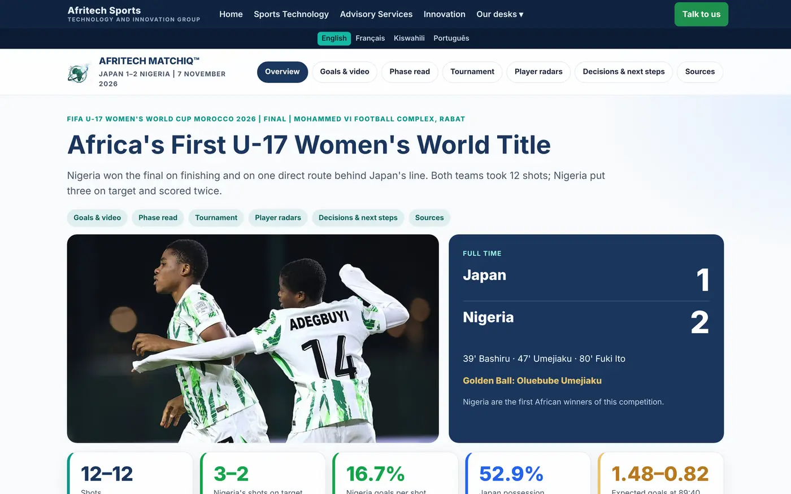
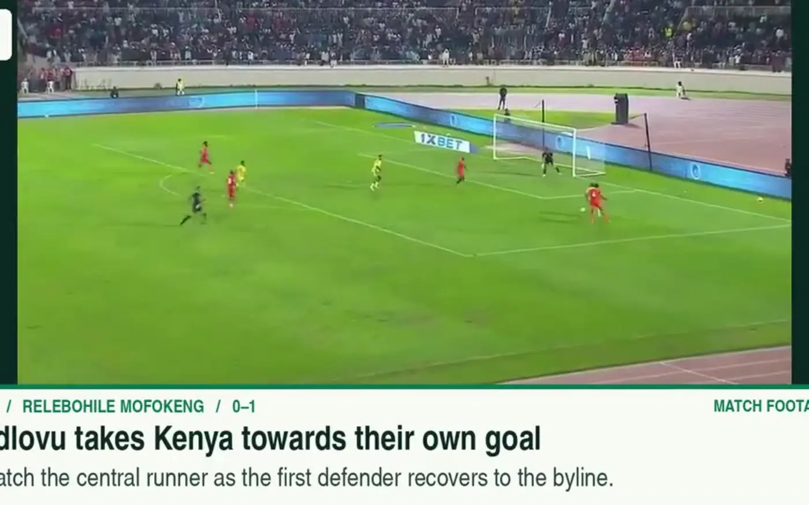
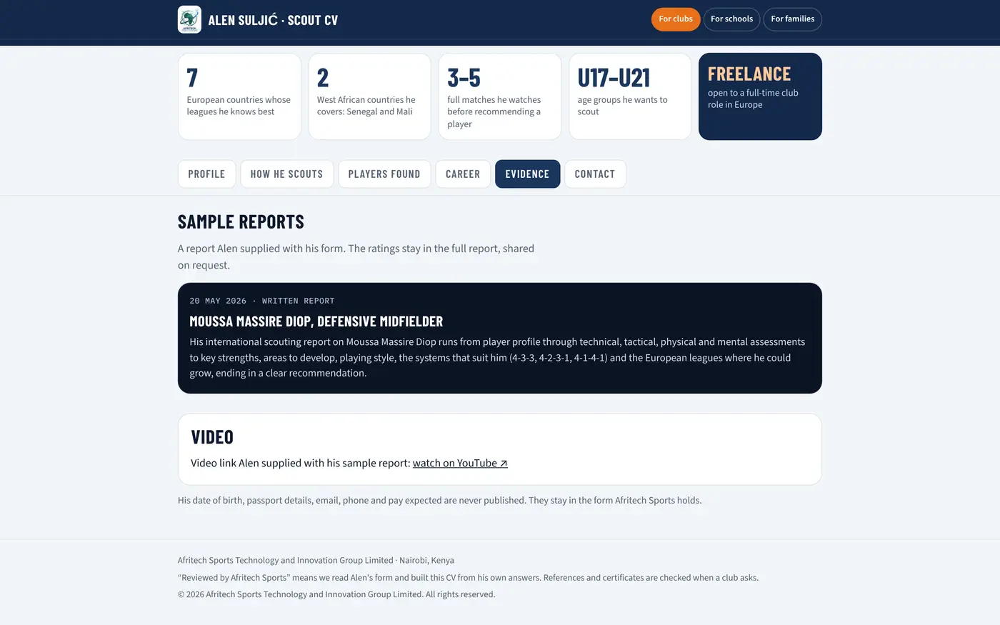
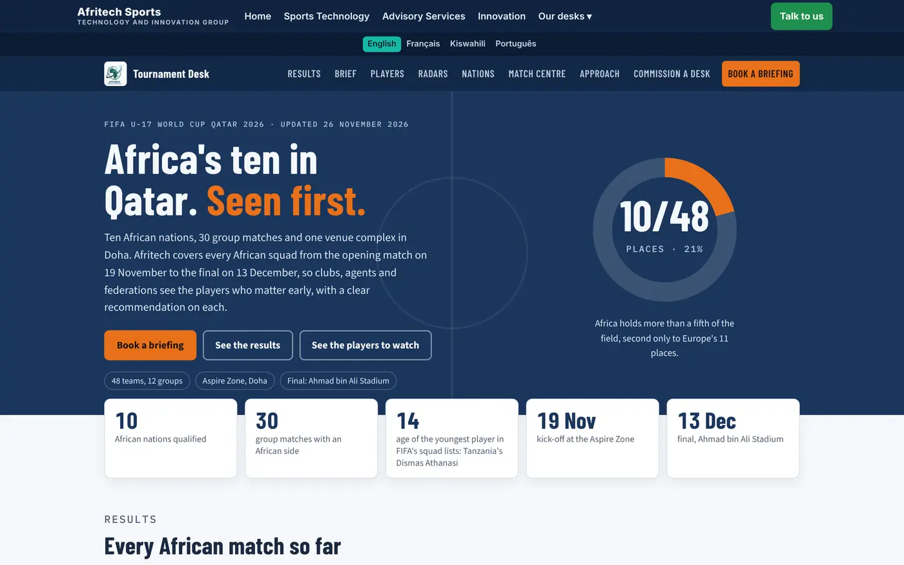
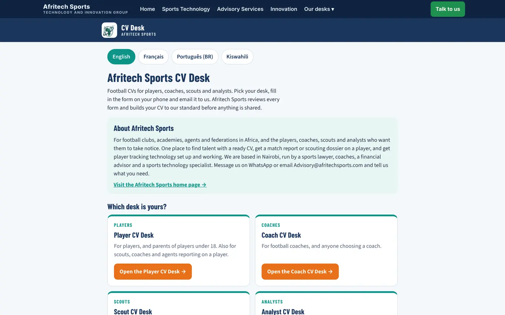
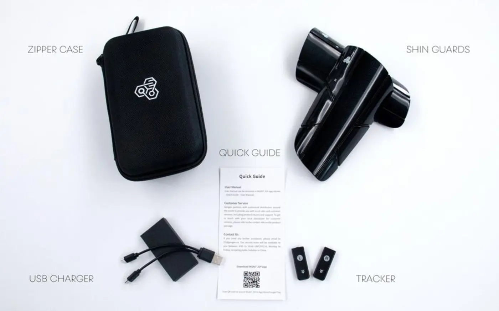
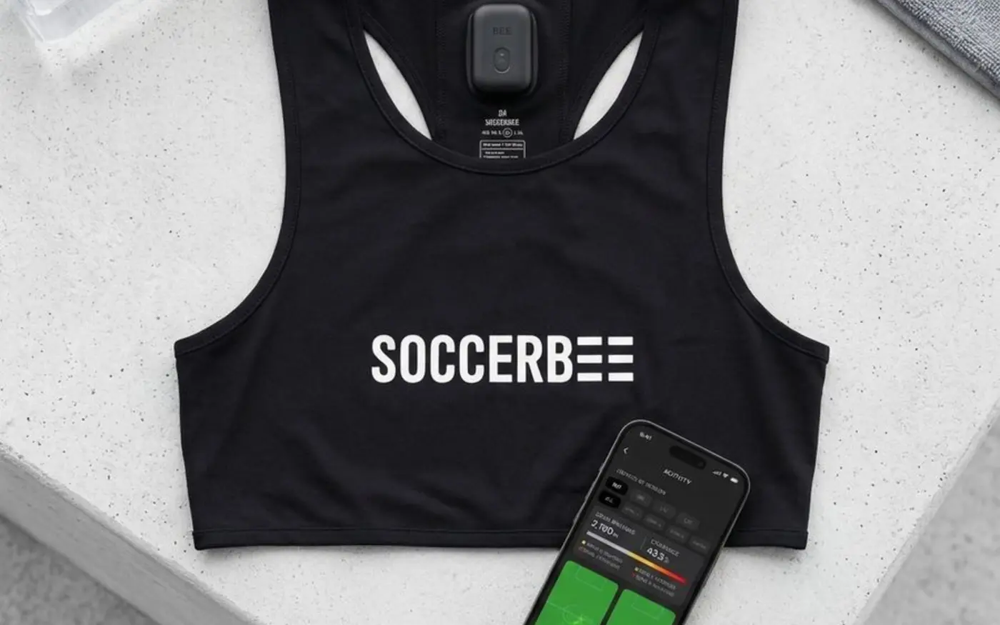
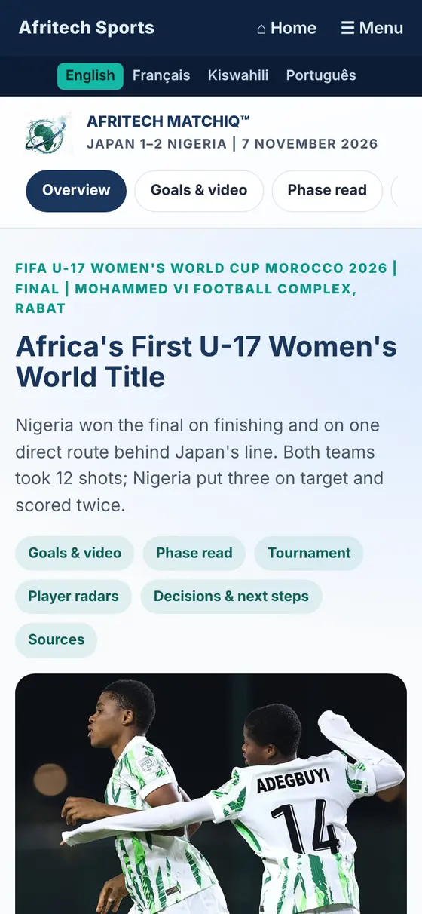
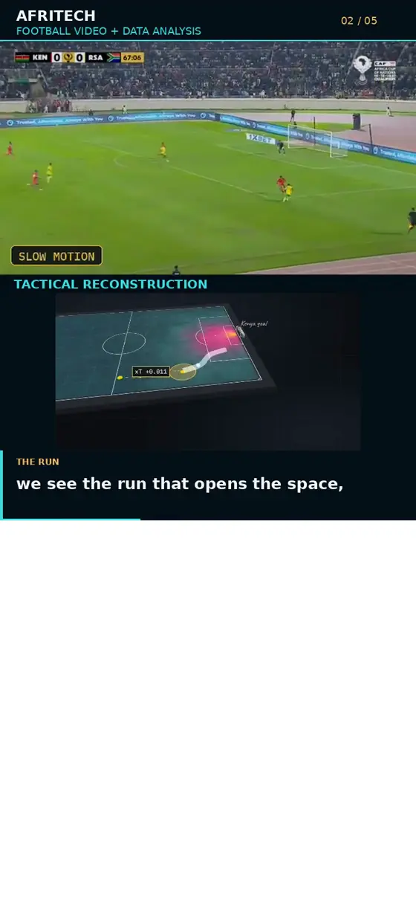
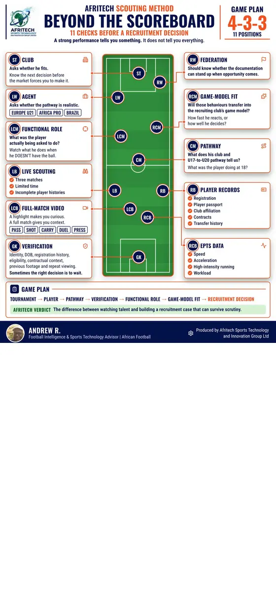
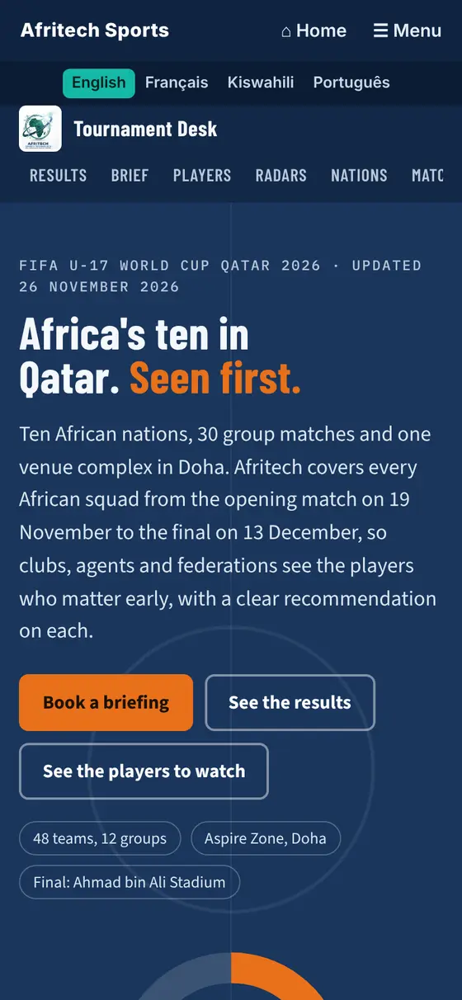
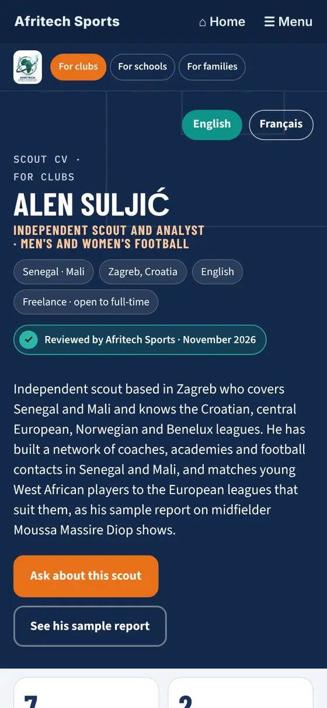
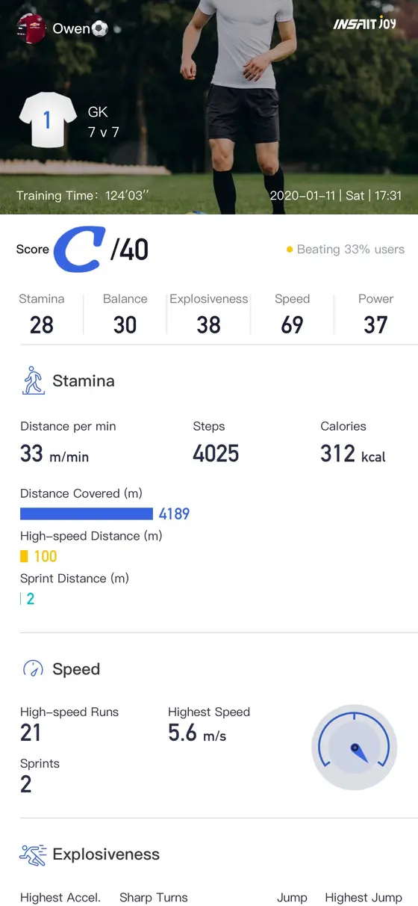
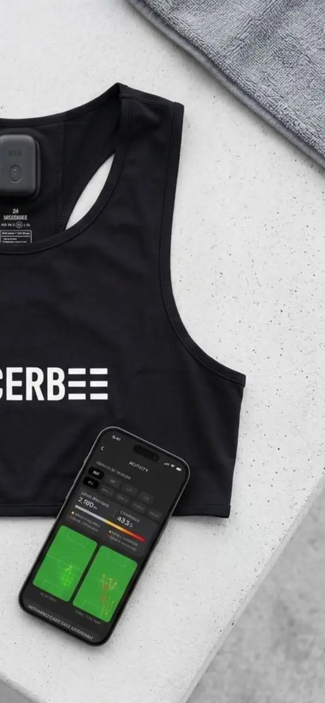
The realityLa réalitéUkweliA realidade
Africa develops the talent. Evidence decides who gets paid.L’Afrique forme les talents. Les preuves décident qui est payé.Afrika inakuza vipaji. Ushahidi unaamua nani analipwa.A África forma o talento. As evidências decidem quem recebe.
Every weekend, players across Africa perform in front of no scouts, no cameras and no data. When one of them moves abroad, FIFA pays training rewards to every club that developed him from age 12. But only if that club can prove it: registration, player passport, match video, numbers. No records, no money.
Chaque week-end, des joueurs partout en Afrique jouent sans recruteurs, sans caméras et sans données. Quand l’un d’eux part à l’étranger, la FIFA verse des indemnités de formation à chaque club qui l’a formé dès 12 ans. À condition de le prouver : enregistrement, passeport du joueur, vidéo, chiffres. Pas de dossier, pas d’argent.
Kila wikendi, wachezaji kote Afrika wanacheza bila maskauti, bila kamera na bila data. Mmoja wao anapohamia nje, FIFA inalipa fidia ya mafunzo kwa kila klabu iliyomkuza tangu miaka 12. Lakini tu kama klabu inaweza kuthibitisha: usajili, pasipoti ya mchezaji, video ya mechi, takwimu. Hakuna kumbukumbu, hakuna pesa.
Todo fim de semana, jogadores de toda a África jogam sem olheiros, sem câmeras e sem dados. Quando um deles vai para o exterior, a FIFA paga compensações de formação a cada clube que o formou desde os 12 anos. Mas só se o clube provar: registro, passaporte do jogador, vídeo, números. Sem registros, sem dinheiro.
Source: FIFA Clearing House media release, July 2026Source : communiqué FIFA Clearing House, juillet 2026Chanzo: taarifa ya FIFA Clearing House, Julai 2026Fonte: comunicado da FIFA Clearing House, julho de 2026
in training rewards generated through FIFA’s Clearing House since November 2022, with USD 639 million already paid to clubs that could prove their part.
d’indemnités de formation générées par la Clearing House de la FIFA depuis novembre 2022, dont 639 millions USD déjà versés aux clubs qui ont pu prouver leur rôle.
za fidia ya mafunzo zimezalishwa kupitia Clearing House ya FIFA tangu Novemba 2022, na dola milioni 639 tayari zimelipwa kwa klabu zilizothibitisha mchango wao.
em compensações de formação geradas pela Clearing House da FIFA desde novembro de 2022, com USD 639 milhões já pagos aos clubes que provaram sua parte.
Is your club owed money for a player it developed?
Votre club a-t-il droit à de l’argent pour un joueur formé chez lui ?
Je, klabu yako inadai pesa kwa mchezaji iliyemkuza?
Seu clube tem dinheiro a receber por um jogador que formou?
The scoreboardLe tableau d’affichageUbao wa matokeoO placar
New this weekNouveau cette semaineMpya wiki hiiNovidades da semana
MatchIQ
We don’t just watch the game. We decode it.Nous ne regardons pas seulement le match. Nous le décodons.Hatutazami mchezo tu. Tunauchambua.Não só assistimos ao jogo. Nós o decodificamos.
Every match we analyse becomes a MatchIQ dashboard: the replay, the tactical reconstruction, the runs that open space and the moments that change a game. One file that opens on any phone, even with no signal.
Chaque match analysé devient un tableau de bord MatchIQ : le replay, la reconstruction tactique, les courses qui ouvrent l’espace et les moments qui font basculer un match. Un seul fichier, lisible sur n’importe quel téléphone, même sans réseau.
Kila mechi tunayochambua inakuwa dashibodi ya MatchIQ: marudio, uundaji upya wa mbinu, mbio zinazofungua nafasi na matukio yanayobadilisha mchezo. Faili moja linalofunguka kwenye simu yoyote, hata bila mtandao.
Cada partida que analisamos vira um painel MatchIQ: o replay, a reconstrução tática, as corridas que abrem espaço e os lances que mudam o jogo. Um arquivo que abre em qualquer celular, mesmo sem sinal.
Selected workTravaux choisisKazi teuleTrabalhos selecionados
Work you can open today.Du travail à ouvrir aujourd’hui.Kazi unayoweza kufungua leo.Trabalho para abrir hoje.
Every piece below is live and public. No mock-ups, no stock photos: the same reports, desks and CVs our clients receive.
Tout ce qui suit est en ligne et public. Pas de maquettes, pas de photos de banque d’images : les mêmes rapports, desks et CV que reçoivent nos clients.
Kila kazi hapa chini iko hewani na wazi kwa umma. Hakuna picha za kuigiza: ni ripoti, madawati na CV zile zile wanazopokea wateja wetu.
Tudo abaixo está no ar e é público. Sem maquetes, sem fotos de banco: os mesmos relatórios, mesas e currículos que nossos clientes recebem.
MatchIQ · U-17 World Cup finalMatchIQ · finale Coupe du monde U-17MatchIQ · fainali Kombe la Dunia U-17MatchIQ · final da Copa Sub-17
Hover to flipSurvolez pour retournerGusa kugeuzaPasse o mouse para virar ↻MatchIQ · U-17 World Cup finalMatchIQ · finale Coupe du monde U-17MatchIQ · fainali Kombe la Dunia U-17MatchIQ · final da Copa Sub-17
Nigeria 2–1 Japan, read goal by goal: radars, phase reads and five dated next steps.
Nigeria 2–1 Japon, but par but : radars, lectures de phases et cinq étapes datées.
Nigeria 2–1 Japan, bao kwa bao: rada, uchambuzi wa awamu na hatua tano zenye tarehe.
Nigéria 2–1 Japão, gol a gol: radares, leitura das fases e cinco passos com data.
- Goals and key moments, clip by clipButs et moments clés, séquence par séquenceMabao na matukio muhimu, kipande kwa kipandeGols e lances-chave, clipe a clipe
- Player radars for both squadsRadars des joueuses des deux effectifsRada za wachezaji wa vikosi vyoteRadares das jogadoras dos dois elencos
- Opens on any phone, offlineS’ouvre sur tout téléphone, hors ligneInafunguka kwenye simu yoyote, bila mtandaoAbre em qualquer celular, offline
Scouting dossiersDossiers de recrutementRipoti za uskautiDossiês de scouting
Hover to flipSurvolez pour retournerGusa kugeuzaPasse o mouse para virar ↻Scouting dossiersDossiers de recrutementRipoti za uskautiDossiês de scouting
One player, eleven checks, one clear verdict a club or agent can act on.
Un joueur, onze vérifications, un avis clair pour agir.
Mchezaji mmoja, ukaguzi kumi na moja, uamuzi mmoja wa wazi.
Um jogador, onze verificações, uma recomendação clara.
- Ratings, strengths, video evidenceNotes, points forts, preuves vidéoAlama, uwezo, ushahidi wa videoAvaliações, pontos fortes, vídeo
- Compared with players in the same positionComparé aux joueurs du même posteIkilinganishwa na wa nafasi hiyoComparado com a mesma posição
- Eleven checks before any verdictOnze vérifications avant tout avisUkaguzi 11 kabla ya uamuziOnze verificações antes do veredito
Tournament Desk · Qatar 2026Desk Tournoi · Qatar 2026Dawati la Mashindano · Qatar 2026Mesa do Torneio · Catar 2026
Hover to flipSurvolez pour retournerGusa kugeuzaPasse o mouse para virar ↻Tournament Desk · Qatar 2026Desk Tournoi · Qatar 2026Dawati la Mashindano · Qatar 2026Mesa do Torneio · Catar 2026
Africa’s ten nations at the U-17 World Cup, match by match, players scored.
Les dix nations africaines à la Coupe du monde U-17, match par match, joueurs notés.
Mataifa kumi ya Afrika Kombe la Dunia U-17, mechi kwa mechi, wachezaji wakipewa alama.
As dez seleções africanas na Copa Sub-17, jogo a jogo, jogadores avaliados.
- Every African squad, every matchChaque sélection africaine, chaque matchKila timu ya Afrika, kila mechiCada seleção africana, cada jogo
- Players to watch, scored the same wayJoueurs à suivre, notés de la même façonWachezaji wa kufuatilia, kwa alama sawaJogadores a acompanhar, avaliados igual
- Commission one for your competitionCommandez-en un pour votre compétitionAgiza moja kwa mashindano yakoEncomende uma para sua competição
Football CVsCV footballCV za sokaCurrículos de futebol
Hover to flipSurvolez pour retournerGusa kugeuzaPasse o mouse para virar ↻Football CVsCV footballCV za sokaCurrículos de futebol
Players, coaches, scouts and analysts, built to our standard so clubs can find them.
Joueurs, entraîneurs, recruteurs et analystes, à notre standard pour être trouvés.
Wachezaji, makocha, maskauti na wachambuzi, kwa kiwango chetu ili klabu ziwapate.
Jogadores, treinadores, olheiros e analistas, no nosso padrão para serem encontrados.
- A short form on your phoneUn court formulaire sur téléphoneFomu fupi kwenye simuUm formulário curto no celular
- Reviewed before anything is sharedRelu avant tout partageInapitiwa kabla ya kushirikishwaRevisado antes de compartilhar
- Four languages, four desksQuatre langues, quatre desksLugha nne, madawati manneQuatro idiomas, quatro mesas
INSAIT JOY smart shin guardsProtège-tibias connectés INSAIT JOYVilinda-muundi janja vya INSAIT JOYCaneleiras inteligentes INSAIT JOY
Hover to flipSurvolez pour retournerGusa kugeuzaPasse o mouse para virar ↻INSAIT JOY smart shin guardsProtège-tibias connectés INSAIT JOYVilinda-muundi janja vya INSAIT JOYCaneleiras inteligentes INSAIT JOY
Every run, touch and kick, on the coach’s phone after the session.
Chaque course, touche et frappe, sur le téléphone du coach après la séance.
Kila mbio, mguso na teke, kwenye simu ya kocha baada ya mazoezi.
Cada corrida, toque e chute, no celular do treinador após o treino.
- Sensor in each shin guardUn capteur dans chaque protège-tibiaKihisi ndani ya kila kilinda-muundiSensor em cada caneleira
- Distance, sprints, kicks, foot useDistance, sprints, frappes, pied utiliséUmbali, mbio, mateke, mguu unaotumikaDistância, sprints, chutes, pé usado
- Set up at your ground, staff trainedInstallé chez vous, staff forméTunasimika uwanjani, tunafunza wafanyakaziInstalado no seu campo, equipe treinada
Soccerbee GPS trackingSuivi GPS SoccerbeeUfuatiliaji wa GPS wa SoccerbeeMonitoramento GPS Soccerbee
Hover to flipSurvolez pour retournerGusa kugeuzaPasse o mouse para virar ↻Soccerbee GPS trackingSuivi GPS SoccerbeeUfuatiliaji wa GPS wa SoccerbeeMonitoramento GPS Soccerbee
Top speed and high-speed running, benchmarked against players of the same age.
Vitesse max et course à haute intensité, comparées aux joueurs du même âge.
Kasi ya juu na mbio za kasi, zikilinganishwa na wachezaji wa umri sawa.
Velocidade máxima e corrida intensa, comparadas com jogadores da mesma idade.
- GPS pod in a light vestBoîtier GPS dans un gilet légerKifaa cha GPS ndani ya fulana nyepesiSensor GPS em colete leve
- Benchmarked against peersComparé aux pairsIkilinganishwa na wenzaoComparado com os pares
- Built for youth and academy squadsConçu pour les jeunes et les académiesKwa vikosi vya vijana na akademiaFeito para base e academias
Want your club’s next match to look like this?
Vous voulez que votre prochain match ressemble à ça ?
Ungependa mechi ijayo ya klabu yako ionekane hivi?
Quer que a próxima partida do seu clube fique assim?
What we doCe que nous faisonsTunachofanyaO que fazemos
Seven ways we help you win.Sept façons de vous aider à gagner.Njia saba za kukusaidia kushinda.Sete formas de ajudar você a vencer.
Evidence for every football decision, from the first scouting trip to the transfer paperwork.
Des preuves pour chaque décision football, du premier déplacement de recrutement aux papiers du transfert.
Ushahidi kwa kila uamuzi wa soka, kuanzia safari ya kwanza ya uskauti hadi nyaraka za uhamisho.
Evidências para cada decisão no futebol, da primeira viagem de scouting à papelada da transferência.
01Match analysis & MatchIQAnalyse de match & MatchIQUchambuzi wa mechi na MatchIQAnálise de partidas e MatchIQ
Know what happened, and what to do on Monday.
Savoir ce qui s’est passé, et quoi faire lundi.
Jua kilichotokea, na la kufanya Jumatatu.
Saiba o que aconteceu e o que fazer na segunda-feira.
- Pre-match briefs and post-match reportsBriefings d’avant-match et rapports d’après-matchMuhtasari kabla ya mechi na ripoti baada ya mechiBriefings pré-jogo e relatórios pós-jogo
- Interactive dashboards that open with no signalTableaux de bord qui s’ouvrent sans réseauDashibodi zinazofunguka bila mtandaoPainéis que abrem sem sinal
- Video tagging: every pass, shot and duel logged in NairobiAnnotation vidéo : chaque passe, tir et duel relevé à NairobiKuwekea video alama: kila pasi, shuti na pambano, NairobiMarcação de vídeo: cada passe, finalização e duelo, em Nairóbi
02Scouting dossiersDossiers de recrutementRipoti za uskautiDossiês de scouting
One player, one file, one clear verdict.
Un joueur, un dossier, un avis clair.
Mchezaji mmoja, faili moja, uamuzi mmoja wa wazi.
Um jogador, um arquivo, uma recomendação clara.
- Ratings, strengths and video evidenceNotes, points forts et preuves vidéoAlama, uwezo na ushahidi wa videoAvaliações, pontos fortes e evidências em vídeo
- Compared with players in the same positionComparé aux joueurs du même posteIkilinganishwa na wachezaji wa nafasi hiyoComparado com jogadores da mesma posição
- Eleven checks before a recruitment decisionOnze vérifications avant une décisionUkaguzi kumi na moja kabla ya uamuziOnze verificações antes de uma decisão
03CV DeskBureau CVDawati la CVMesa de Currículos
Be found by the clubs that matter.
Être trouvé par les clubs qui comptent.
Onekana na klabu zinazohusika.
Seja encontrado pelos clubes que importam.
- Players, coaches, scouts and analystsJoueurs, entraîneurs, recruteurs et analystesWachezaji, makocha, maskauti na wachambuziJogadores, treinadores, olheiros e analistas
- A short form on your phone, in four languagesUn court formulaire sur téléphone, en quatre languesFomu fupi kwenye simu, kwa lugha nneUm formulário curto no celular, em quatro idiomas
- Parents fill in the form for players under 18Les parents remplissent pour les moins de 18 ansWazazi wanajaza fomu kwa walio chini ya miaka 18Os pais preenchem para menores de 18 anos
04Player trackingSuivi des joueursUfuatiliaji wa wachezajiMonitoramento de jogadores
See how far and how fast your players really run.
Voir jusqu’où et à quelle vitesse vos joueurs courent vraiment.
Ona umbali na kasi halisi ya wachezaji wako.
Veja quanto e quão rápido seus jogadores realmente correm.
- INSAIT JOY smart shin guardsProtège-tibias connectés INSAIT JOYVilinda-muundi janja vya INSAIT JOYCaneleiras inteligentes INSAIT JOY
- Soccerbee GPS vests, benchmarked against peersGilets GPS Soccerbee, comparés aux pairsFulana za GPS za Soccerbee, zikilinganishwa na wenzaoColetes GPS Soccerbee, comparados com pares
- Chosen with you, set up at your ground, staff trainedChoisis avec vous, installés chez vous, staff forméTunachagua nawe, tunasimika uwanjani, tunafunza wafanyakaziEscolhidos com você, instalados no seu campo, equipe treinada
05Contracts, registration & transfersContrats, enregistrement & transfertsMikataba, usajili na uhamishoContratos, registro e transferências
Get paid for the players you develop.
Être payé pour les joueurs que vous formez.
Lipwa kwa wachezaji unaowakuza.
Seja pago pelos jogadores que você forma.
- Guidance from our sports lawyerLes conseils de notre avocat du sportUshauri kutoka kwa mwanasheria wetu wa michezoOrientação do nosso advogado esportivo
- Player contracts and registrationContrats et enregistrement des joueursMikataba na usajili wa wachezajiContratos e registro de jogadores
- Claiming FIFA training rewardsRéclamer les indemnités de formation FIFAKudai fidia ya mafunzo ya FIFAReceber as compensações de formação da FIFA
06Workshops & webinarsAteliers & webinairesWarsha na seminaWorkshops e webinars
Your staff, reading the numbers themselves.
Votre staff, qui lit les chiffres lui-même.
Wafanyakazi wako, wakisoma takwimu wenyewe.
Sua equipe lendo os números por conta própria.
- Free webinars for coaches, analysts and scoutsWebinaires gratuits pour entraîneurs, analystes et recruteursSemina za bure kwa makocha, wachambuzi na maskautiWebinars gratuitos para treinadores, analistas e olheiros
- Hands-on tagging and coding with FootLabAnnotation et codage pratiques avec FootLabMafunzo ya vitendo ya kuwekea alama pamoja na FootLabMarcação e codificação na prática com a FootLab
- Men’s and women’s game, across sub-Saharan AfricaFootball masculin et féminin, en Afrique subsaharienneSoka la wanaume na wanawake, Afrika kusini mwa SaharaFutebol masculino e feminino, na África subsaariana
07Tournament DeskDesk TournoiDawati la MashindanoMesa do Torneio
Your competition, covered like a World Cup.
Votre compétition, couverte comme une Coupe du monde.
Mashindano yako, yakifuatiliwa kama Kombe la Dunia.
Sua competição, coberta como uma Copa do Mundo.
- Every squad, every match, players scoredChaque effectif, chaque match, joueurs notésKila kikosi, kila mechi, wachezaji wakipewa alamaCada elenco, cada jogo, jogadores avaliados
- Commission a desk at any levelCommandez un desk à tout niveauAgiza dawati kwa kiwango chochoteEncomende uma mesa em qualquer nível
- Live now for the FIFA U-17 World CupEn direct pour la Coupe du monde U-17Hewani sasa kwa Kombe la Dunia U-17No ar agora para a Copa Sub-17
Video analysis · Kenya 1–2 South AfricaAnalyse vidéo · Kenya 1–2 Afrique du SudUchambuzi wa video · Kenya 1–2 Afrika KusiniAnálise de vídeo · Quênia 1–2 África do Sul
One match. Every angle.Un match. Tous les angles.Mechi moja. Kila pembe.Uma partida. Todos os ângulos.
Our post-match analysis of Kenya’s 2–1 defeat to South Africa: Kenya had 57% of the ball and two shots on target, South Africa had eight. Here is how each side found its final touch, and what a coaching staff takes from it.
Notre analyse d’après-match de la défaite 2–1 du Kenya face à l’Afrique du Sud : 57 % de possession et deux tirs cadrés pour le Kenya, huit pour l’Afrique du Sud. Voici comment chaque équipe a trouvé sa dernière touche, et ce qu’un staff en retient.
Uchambuzi wetu wa kipigo cha Kenya cha 2–1 dhidi ya Afrika Kusini: Kenya ilimiliki mpira 57% na mashuti mawili yaliyolenga lango, Afrika Kusini manane. Hivi ndivyo kila timu ilivyopata mguso wa mwisho, na kile benchi la ufundi linachojifunza.
Nossa análise pós-jogo da derrota do Quênia por 2–1 para a África do Sul: 57% de posse e duas finalizações no alvo para o Quênia, oito para a África do Sul. Veja como cada lado encontrou o toque final, e o que uma comissão técnica tira disso.
What we can do for clubs and federationsCe que nous faisons pour les clubs et fédérationsTunachoweza kufanya kwa klabu na mashirikishoO que fazemos para clubes e federações
- 01Post-match coaching reviewRevue d’après-match pour le staffMapitio ya kocha baada ya mechiRevisão pós-jogo para a comissãoPossession, shots and the moments that decided it, cut for Monday's session.Possession, tirs et moments décisifs, montés pour la séance du lundi.Umiliki wa mpira, mashuti na matukio yaliyoamua mechi, kwa mazoezi ya Jumatatu.Posse, finalizações e os lances decisivos, editados para o treino de segunda.
- 02Goal and key-moment breakdownAnalyse des buts et moments clésUchambuzi wa mabao na matukio muhimuAnálise de gols e lances-chaveEvery goal traced back: the run, the pass, the space, the mistake.Chaque but décortiqué : la course, la passe, l’espace, l’erreur.Kila bao linafuatiliwa: mbio, pasi, nafasi, kosa.Cada gol rastreado: a corrida, o passe, o espaço, o erro.
- 03Tactical reconstructionReconstruction tactiqueUundaji upya wa mbinuReconstrução táticaClips rebuilt on a 3D pitch with heat maps and expected threat (xT).Séquences reconstruites sur un terrain 3D avec cartes de chaleur et menace attendue (xT).Vipande vinajengwa upya kwenye uwanja wa 3D na ramani za joto na xT.Lances reconstruídos em campo 3D com mapas de calor e ameaça esperada (xT).
- 04Full-match taggingAnnotation du match completKuwekea alama mechi nzimaMarcação da partida completaEvery pass, shot, carry, duel and press logged by our Nairobi analysts.Chaque passe, tir, conduite, duel et pressing relevé par nos analystes de Nairobi.Kila pasi, shuti, ubebaji, pambano na kubana, Nairobi.Cada passe, finalização, condução, duelo e pressão, registrado em Nairóbi.
- 05Opposition scoutingAnalyse de l’adversaireKuchunguza mpinzaniAnálise do adversárioHow the next opponent builds, presses and defends set pieces.Comment le prochain adversaire construit, presse et défend les coups de pied arrêtés.Jinsi mpinzani ajaye anavyojenga, anavyobana na kulinda mipira ya adhabu.Como o próximo adversário constrói, pressiona e defende bolas paradas.
- 06Player clip reelsMontages vidéo de joueursVideo fupi za mchezajiVídeos de jogadoresEach player’s actions in one reel, for coaching, scouting dossiers and CVs.Les actions d’un joueur dans un montage, pour le coaching, les dossiers et les CV.Matendo ya mchezaji katika video moja, kwa ukocha, ripoti za uskauti na CV.As ações de cada jogador num vídeo, para treino, dossiês e currículos.
- 07Tournament and squad packagesForfaits tournoi et sélectionVifurushi vya mashindano na timu za taifaPacotes de torneio e seleçãoFor federations: every match of a squad or competition, in four languages.Pour les fédérations : chaque match d’une sélection ou d’une compétition, en quatre langues.Kwa mashirikisho: kila mechi ya timu au mashindano, kwa lugha nne.Para federações: cada jogo de uma seleção ou competição, em quatro idiomas.
Three ways to startTrois façons de commencerNjia tatu za kuanzaTrês formas de começar
Pick your first move.Votre premier pas.Chagua hatua ya kwanza.Escolha o primeiro passo.
All three are low risk. See our work on your own match first, learn with us for free, or put one player under the microscope.
Les trois sont sans risque. Voyez notre travail sur votre propre match, apprenez gratuitement avec nous, ou passez un joueur au microscope.
Zote tatu hazina hatari. Ona kazi yetu kwenye mechi yako kwanza, jifunze nasi bure, au mchunguze mchezaji mmoja kwa kina.
As três têm baixo risco. Veja nosso trabalho na sua própria partida, aprenda com a gente de graça ou coloque um jogador no microscópio.
Your match, readVotre match, analyséMechi yako, imechambuliwaSua partida, analisada
- Send us the video of one of your matchesEnvoyez-nous la vidéo d’un de vos matchsTutumie video ya mechi yako mojaEnvie o vídeo de uma das suas partidas
- We send back a MatchIQ preview: key moments and three players to watchNous renvoyons un aperçu MatchIQ : moments clés et trois joueurs à suivreTunakurudishia muhtasari wa MatchIQ: matukio muhimu na wachezaji watatu wa kufuatiliaDevolvemos uma prévia MatchIQ: lances decisivos e três jogadores para acompanhar
- Opens on any phone, no app, no signal neededS’ouvre sur tout téléphone, sans appli ni réseauInafunguka kwenye simu yoyote, bila programu wala mtandaoAbre em qualquer celular, sem app e sem sinal
One per club · within 5 working daysUne par club · sous 5 jours ouvrésMoja kwa kila klabu · ndani ya siku 5 za kaziUma por clube · em até 5 dias úteis
Learn it with usApprenez avec nousJifunze nasiAprenda com a gente
- Live webinars with FootLab (Morocco)Webinaires en direct avec FootLab (Maroc)Semina za moja kwa moja na FootLab (Morocco)Webinars ao vivo com a FootLab (Marrocos)
- Real African matches tagged in front of youDe vrais matchs africains annotés devant vousMechi halisi za Afrika zikiwekewa alama mbele yakoPartidas africanas reais marcadas na sua frente
- Recordings of past sessionsLes enregistrements des sessions passéesRekodi za vipindi vilivyopitaGravações das sessões anteriores
Open link · no sign-upLien ouvert · sans inscriptionKiungo wazi · bila kujisajiliLink aberto · sem cadastro
One scouting dossierUn dossier de recrutementRipoti moja ya uskautiUm dossiê de scouting
- Ratings, strengths and video evidenceNotes, points forts et preuves vidéoAlama, uwezo na ushahidi wa videoAvaliações, pontos fortes e evidências em vídeo
- Eleven checks: pathway, records, fit, verificationOnze vérifications : parcours, dossiers, adéquation, vérificationUkaguzi 11: njia, kumbukumbu, ufanisi, uthibitishoOnze verificações: trajetória, registros, encaixe, verificação
- A clear verdict you can act onUn avis clair sur lequel agirUamuzi wa wazi unaoweza kuufanyia kaziUma recomendação clara para agir
Credited in full to a season package booked within 30 daysDéduit en totalité d’un forfait saison réservé sous 30 joursInahesabiwa kikamilifu kwenye kifurushi cha msimu ndani ya siku 30Abatido integralmente de um pacote de temporada fechado em 30 dias
Who we helpPour quiTunaowasaidiaQuem ajudamos
Who are you?Qui êtes-vous ?Wewe ni nani?Quem é você?
Tell us who you are and the right person at Afritech Sports replies, on WhatsApp or by email.
Dites-nous qui vous êtes et la bonne personne chez Afritech Sports vous répond, sur WhatsApp ou par e-mail.
Tuambie wewe ni nani na mtu sahihi wa Afritech Sports atakujibu, kwa WhatsApp au barua pepe.
Conte quem você é e a pessoa certa da Afritech Sports responde, no WhatsApp ou por e-mail.
Clubs and academiesClubs et académiesKlabu na akademiaClubes e academias
Find players and staff, read your matches, track your squad.
Trouvez joueurs et staff, analysez vos matchs, suivez votre effectif.
Pata wachezaji na wafanyakazi, chambua mechi zako, fuatilia kikosi chako.
Encontre jogadores e comissão técnica, entenda suas partidas, monitore seu elenco.
Players, coaches, scoutsJoueurs, entraîneurs, recruteursWachezaji, makocha, maskautiJogadores, treinadores, olheiros
Get a football CV built to our standard so clubs can find you.
Obtenez un CV football à notre standard pour que les clubs vous trouvent.
Pata CV ya soka iliyoandaliwa kwa kiwango chetu ili klabu zikupate.
Tenha um currículo de futebol no nosso padrão para os clubes encontrarem você.
Parents and schoolsParents et écolesWazazi na shulePais e escolas
Player records, CVs and tracking for young players and student teams.
Dossiers, CV et suivi pour les jeunes joueurs et les équipes scolaires.
Kumbukumbu, CV na ufuatiliaji kwa wachezaji vijana na timu za wanafunzi.
Históricos, currículos e monitoramento para jovens jogadores e equipes estudantis.
AgentsAgentsMawakalaAgentes
Scouting dossiers and match reports that help you place a player.
Dossiers de recrutement et rapports de match pour placer un joueur.
Ripoti za uskauti na za mechi zinazokusaidia kumpatia mchezaji klabu.
Dossiês de scouting e relatórios de partida que ajudam a colocar um jogador.
Federations and leaguesFédérations et liguesMashirikisho na ligiFederações e ligas
Match intelligence, match data and technology for teams and competitions.
Analyse, données de match et technologie pour sélections et compétitions.
Uchambuzi, data za mechi na teknolojia kwa timu na mashindano.
Inteligência de jogo, dados e tecnologia para equipes e competições.
Tech buyersAcheteurs de technologieWanunuzi wa teknolojiaCompradores de tecnologia
Smart shin guards and GPS vests, chosen with you and set up.
Protège-tibias connectés et gilets GPS, choisis avec vous et installés.
Vilinda-muundi janja na fulana za GPS, tunavichagua pamoja nawe na kuvisimika.
Caneleiras inteligentes e coletes GPS, escolhidos com você e instalados.
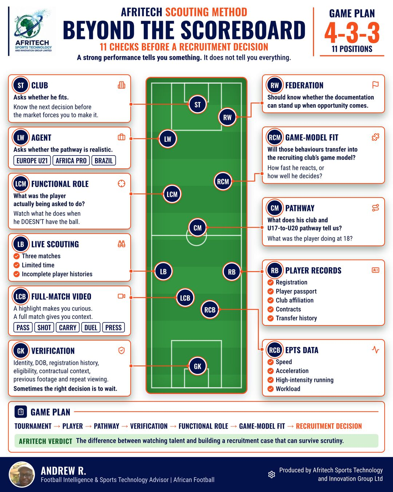
Our scouting methodNotre méthodeMbinu yetu ya uskautiNosso método
Beyond the scoreboard.Au-delà du score.Zaidi ya matokeo.Além do placar.
A strong performance tells you something. It does not tell you everything. Before we recommend a player, we run eleven checks, lined up like a team.
Une belle performance dit quelque chose. Elle ne dit pas tout. Avant de recommander un joueur, nous faisons onze vérifications, alignées comme une équipe.
Mchezo mzuri unakueleza kitu. Haukuelezi kila kitu. Kabla ya kupendekeza mchezaji, tunafanya ukaguzi kumi na moja, uliopangwa kama timu.
Uma grande atuação diz alguma coisa. Não diz tudo. Antes de recomendar um jogador, fazemos onze verificações, escaladas como um time.
Got a player you’re unsure about?
Un joueur vous fait hésiter ?
Una mchezaji unayemtilia shaka?
Tem um jogador que gera dúvida?

ListenÉcouterSikilizaOuça
Deep Dive Into Soccer.Deep Dive Into Soccer.Deep Dive Into Soccer.Deep Dive Into Soccer.
Our podcast takes African football apart, in your language: a separate episode in English, French, Swahili and Portuguese.
Notre podcast décortique le football africain dans votre langue : un épisode distinct en anglais, français, swahili et portugais.
Podikasti yetu inachambua soka la Afrika kwa lugha yako: kipindi tofauti kwa Kiingereza, Kifaransa, Kiswahili na Kireno.
Nosso podcast destrincha o futebol africano no seu idioma: um episódio próprio em inglês, francês, suaíli e português.
Have a story African football needs to hear?
Une histoire que le football africain doit entendre ?
Una hadithi ambayo soka la Afrika linahitaji kusikia?
Tem uma história que o futebol africano precisa ouvir?
Why AfritechPourquoi AfritechKwa nini AfritechPor que a Afritech
Africa doesn’t have a talent problem. It has an evidence problem. Our players are seen by too few scouts, measured by too little data, and the clubs that raise them too often can’t prove it when the money moves. We build the video, the numbers and the records that change that.L’Afrique n’a pas un problème de talent. Elle a un problème de preuves. Nos joueurs sont vus par trop peu de recruteurs, mesurés par trop peu de données, et les clubs qui les forment peinent trop souvent à le prouver quand l’argent circule. Nous produisons la vidéo, les chiffres et les dossiers qui changent cela.Afrika haina tatizo la vipaji. Ina tatizo la ushahidi. Wachezaji wetu wanaonekana na maskauti wachache mno, wanapimwa kwa data kidogo mno, na klabu zinazowakuza mara nyingi hazina njia ya kuthibitisha pesa zinapohama. Tunatengeneza video, takwimu na kumbukumbu zinazobadilisha hilo.A África não tem um problema de talento. Tem um problema de evidências. Nossos jogadores são vistos por poucos olheiros, medidos por poucos dados, e os clubes que os formam muitas vezes não conseguem provar isso quando o dinheiro circula. Nós produzimos o vídeo, os números e os registros que mudam isso.
Want to talk it through with us directly?
Vous voulez en parler directement avec nous ?
Ungependa kuzungumza nasi moja kwa moja?
Quer conversar diretamente com a gente?
How we workNotre façon de travaillerJinsi tunavyofanya kaziComo trabalhamos
Four steps.
No surprises.Quatre étapes.
Aucune surprise.Hatua nne.
Hakuna mshangao.Quatro passos.
Sem surpresas.
From the first message to the last match of the season, you always know what happens next.
Du premier message au dernier match de la saison, vous savez toujours ce qui suit.
Kuanzia ujumbe wa kwanza hadi mechi ya mwisho ya msimu, unajua kinachofuata.
Da primeira mensagem ao último jogo da temporada, você sempre sabe o que vem depois.
The briefLe briefMaelezoO briefing
Who you are and what you need, on WhatsApp or email.
Qui vous êtes et ce dont vous avez besoin, sur WhatsApp ou par e-mail.
Wewe ni nani na unahitaji nini, kwa WhatsApp au barua pepe.
Quem você é e o que precisa, no WhatsApp ou por e-mail.
The planLe planMpangoO plano
A clear scope, a price and a date before any work starts.
Un cadre clair, un prix et une date avant tout travail.
Mpango wa wazi, bei na tarehe kabla ya kazi kuanza.
Escopo claro, preço e data antes de começar.
The deliveryLa livraisonUwasilishajiA entrega
Reports, dossiers, CVs or kit, on your phone, in your language.
Rapports, dossiers, CV ou matériel, sur votre téléphone, dans votre langue.
Ripoti, CV au vifaa, kwenye simu yako, kwa lugha yako.
Relatórios, dossiês, currículos ou equipamento, no seu celular.
The seasonLa saisonMsimuA temporada
We stay with you through the season, not just the handover.
Nous restons à vos côtés toute la saison.
Tunabaki nawe msimu mzima, si siku ya kukabidhi tu.
Ficamos com você a temporada toda.
Ready for step one?
Prêt pour la première étape ?
Uko tayari kwa hatua ya kwanza?
Pronto para o primeiro passo?
Kick-offCoup d’envoiMwanzo wa mchezoPontapé inicial
Your next decision deserves evidence.Votre prochaine décision mérite des preuves.Uamuzi wako ujao unastahili ushahidi.Sua próxima decisão merece evidências.
Advisory Services, Nairobi, KenyaServices de conseil, Nairobi, KenyaHuduma za Ushauri, Nairobi, KenyaConsultoria, Nairóbi, Quênia
Andrew Rukidi · LinkedIn
PodcastPodcastPodikastiPodcast